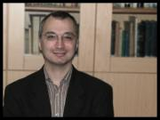

Doç. Dr. Uğur Ekren

-
Kişisel Bilgiler
- Adı Soyadı: Uğur EKREN
-
Akademik Unvanı:
- Yardımcı Doçent (2007)
- Doçent (2011)
- E-Mail: ekrenugur@yahoo.com.tr
- Telefon: 212-4555700 / 15796
- Kişisel Web Adresi: Yok
- Doğum Tarihi ve Yeri: 10 Aralık 1967 / İskenderun
-
Eğitim
- Lisans: İstanbul Üniversitesi Edebiyat Fakültesi Felsefe Bölümü-1991
-
Yüksek Lisans: İstanbul Üniversitesi Sosyal Bilimler Enstitüsü Felsefe Anabilim Dalı -1994
- Tez Konusu: Hume’da Nedensellik ve İnanç Sorunu Bağlamında Bilme Fenomeni
- Tez Danışmanı: Prof. Dr. Betül ÇOTUKSÖKEN
-
Doktora: İstanbul Üniversitesi Sosyal Bilimler Enstitüsü Felsefe Anabilim Dalı -2004
- Tez Konusu: Aristoteles’te Mekân ve Hareket
- Tez Danışmanı: Prof. Dr. Teoman DURALI
-
Yabancı Dil Bilgisi
- İngilizce
- Almanca
-
Uzmanlık Alanları
- Felsefe Tarihi
- Yeniçağ Felsefesi
- Fenomenoloji
- Sanat Felsefesi
-
Kitap & Kitap İçinde Bölüm
-
Kitap İçinde Bölüm
- “Fenomenoloji ve Analitik Felsefenin Kaynakları: Brentano ve Meinong", Kant Sonrası Metafizik Üzerine Konuşmalar, İstanbul, Küre Yayınları, 2012, s. 91-131.
-
Kitap İçinde Bölüm
-
Makaleler & Bildiriler & Çeviriler
-
Makaleler
- “Nesneler Teorisine Giriş-I", Kutadgubilig Felsefe-Bilim Araştırmaları Dergisi, Sayı: 7, Mart 2004.
- "Franz Brentano: Hayatı, Eserleri, Okulu ve Felsefesi I", Kutadgubilig Felsefe-Bilim Araştırmaları Dergisi, Sayı: 9, Mart 2006.
- "Kant Hakkında: Franz Brentano ve Henry Sidgwick", Teoman Duralı'ya Armağan Kitabı, Dergah Yayınları, Şubat 2008.
- "Alexius von Meinong ve Nesneler Teorisi", Kutadgubilig Felsefe-Bilim Araştırmaları Dergisi, Sayı: 17, Mart 2010
- “Kıvrımdan Caricata’ya: 18. Yüzyıl İngiliz Ressamlarının (Hogart, Reynolds ve Blake’in) Güzel Anlayışları Üzerine Bir Deneme”, Kutadgubilig Felsefe-Bilim Araştırmaları Dergisi, Sayı: 20, Ekim 2011.
- “Kant'ın 'Mantık Dersleri'ndeki Formel (Genel) Mantık Analizi”, Kutadgubilig Felsefe-Bilim Araştırmaları Dergisi, Yücel YÜKSEL ile birlikte, Sayı: 23, Nisan 2013.
- “The Analysis of Formal (General) Logic in Kant's "Lectures On Logic”, Kutadgubilig Felsefe-Bilim Araştırmaları Dergisi, Yücel YÜKSEL ile birlikte, Sayı: 23, Nisan 2013.
- "Democracy as a Collection/Society of Porcupines", Problems of Democracy: Probing the Boundaries, Inter-Disciplinary Press, Oxford, 2010. (Erdal Yıldız ve Nil Şimşek ile birlikte)
-
Bildiriler
- “Franz Brentano’da Duygusal Değerler Olarak İyi ve Güzel”, Felsefe Açısından Kültür, Sanat ve Dil Sempozyumu, Mimar Sinan Güzel Sanatlar Üniversitesi Yayınları, Temmuz 2011.
-
Çeviriler
- "Gerçek ve Kurmaca Nesneler", Franz Brentano, Çev: Uğur Ekren, Kutadgubilig Felsefe-Bilim Araştırmaları Dergisi, Sayı: 7, Mart 2004.
- "İnsan Doğası Üzerine Bir İncelemenin Özeti", David Hume, Çev: Ece Aydoğdu & Uğur Ekren, Kutadgubilig Felsefe-Bilim Araştırmaları Dergisi, Sayı: 10, Eylül 2006.
- "Tasvirci Psikoloji ya da Tasvirci Fenomenoloji", Franz Brentano, Çev: Uğur Ekren, Kutadgubilig Felsefe-Bilim Araştırmaları Dergisi, Sayı: 9, Mart 2006
- "Franz Brentano'nun El Yazmaları", J. C. M. Brentano, Çev: Uğur Ekren, Kutadgubilig Felsefe-Bilim Araştırmaları Dergisi, Sayı: 9, Mart 2006
- "Entia Irrealia ile İlgili Hatalı Öğretinin Kökeni Üzerine", F. Brentano, Çev: Uğur Ekren, Felsefe Arkivi, Sayı:31, 2007.
- "Dil", F. Brentano, Çev: Uğur Ekren, Felsefe Arkivi, Sayı:31, 2007.
-
Söyleşiler
- “İsmail Tunalı’yla Mülakat”, Uğur Ekren & Arzu İbişi, Kutadgubilig Felsefe Bilim Araştırmaları Dergisi, Sayı: 18, Ekim 2010.
- "Richard Wagner'de Felsefe ve SANAT", Şiir ve înşa: Şiir - Düşünce - Sanat Dergisi, Sayı 3, Kış 2013
-
Makaleler
-
Eğitim ve Öğretim Etkinlikleri
-
Verilen Lisans Dersleri
- Felsefeye Giriş I (Bölüm Dışı)
- Felsefeye Giriş II (Bölüm Dışı)
- Felsefe Tarihi Sorunları I ( Bölüm Dışı)
- Felsefe Tarihi Sorunları II (Bölüm Dışı)
- Yeniçağ Felsefesi
- Modern Felsefenin Oluşumu
- Aristoteles’in Metafizik Anlayışı
- Ortaçağ Felsefesi Tarihi
- Özel Öğretim Yöntemleri (Pedagojik Formasyon)
-
Verilen Lisansüstü Dersleri
- Fenomenolojinin Kaynakları I
- Fenomenolojinin Kaynakları II
- Kant Felsefesi
- Yeniçağ Felsefesinde Metin Okumaları
- Felsefe ve Sanat
-
Yönetilmiş Tezler
- Nil Şimşek / Yüksek Lisans/ Alexius Meinong’da Soyutlama ve Soyut Genel Terimler Problemi / 2010
- Gamze Keskin / Yüksek Lisans/ Kant’ın Transsendental Mantık Anlayışı / 2011
- Ece Aydoğdu / Yüksek Lisans / Franz Brentano’da İntentionalite Anlayışı / 2011
- Berk Utkan Atbakan / Yüksek Lisans / Spinoza’da Modus ve Conatus Kavramları Bağlamında Sevinç ve Keder Sorunu / 2012
- Emine Canlı / Yüksek Lisans / Ernst Cassirer'in Sembolik Formlar Felsefesi'nin Kantçı Temelleri / 2013
-
Verilen Lisans Dersleri
-
İdari Görevler
- İstanbul Üniversitesi Açık ve Uzak Eğitim Fakültesi Felsefe Program Başkanlığı (2011-)
-
Üye Olunan Kuruluşlar
- Türkiye Felsefe Kurumu
- Konferans
- "Felsefenin Perspektifinden Richard Wagner ve Sanatı", Uludağ Felsefe Konferansları 2013-14 Serisi Ördekli Kültür Merkezi, 21 Aralık 2013
- "Brentano ve Meinong'da Metafiziğin Yeri", Maltepe Üniversitesi 13. Felsefe Söyleşileri, 20 Nisan 2013
- Yurtdışı Çalışmaları
- 2013 yazında Bayreuth Üniversitesi'nin davetiyle, Bayreuth-Almanya'da Richard Wagner'in sanatı üzerine kitap çalışması.
»
- Yorum göndermek için giriş yapın
- 16456 okuma
2013-2014 Ders Programı
G: I. Öğretim | II. Öğretim
Lisansüstü | Bilimsel Hazırlık
B: I. Öğretim | II. Öğretim
Lisansüstü | Bilimsel Hazırlık
2012-2013 Ders Programı
G: I. Öğretim | II. Öğretim
B: I. Öğretim | II. Öğretim
Lisansüstü | Bilimsel Hazırlık
2011-2012 Ders Programı
G: I. Öğretim | II. Öğretim
Lisansüstü | Bilimsel Hazırlık
B: I. Öğretim | II. Öğretim
Lisansüstü | Bilimsel Hazırlık
Danışmanlar: node/377